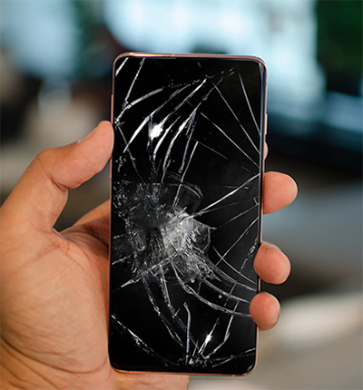

|  |
screen repair we all know accidents happen and sometimes things are innevitable and that's why we offer a quick and inexpensive screen repair servive to help you in your time of need. every repair includes a replacement of the broken screen, the application of a glass screen protector and a 12 month warranty in case anything else happens. our prices start at £30 for standard phone screens and smaller screens such as those found on an mp3 player and can go up to £40 for things like phones with a beveled screen or larger screens such as those seen on tablets |